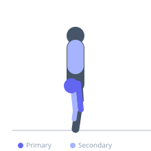
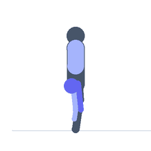

Exercise guide / Sled Push
Sled Push
The sled push is a linear strength and conditioning exercise in which the athlete drives a loaded sled forward across a surface by pushing from handles at the rear, maintaining a forward lean with straight arms. The hip extension and leg drive mechanics closely replicate the acceleration phase of sprinting, making it a highly effective training tool for sport-specific linear power, lower body strength development, and high-intensity metabolic conditioning with minimal eccentric muscle damage.
Primary muscles
gluteus maximus
rectus femoris
vastus lateralis
Secondary muscles
gastrocnemius medial
biceps femoris long head
pectoralis major sternal
Stabilizers
erector spinae
transverse abdominis
Equipment
No Equipment (Bodyweight)


Starting position
- Stand behind the sled, gripping the upright handles. Lean forward at approximately 45 degrees, arms straight.
Setup
- Load the sled appropriately — heavier loads develop strength, lighter loads develop speed and conditioning. Use a rubber or turf surface for most sled work.
Steps
- Step 1: Grip the sled handles and lean forward with the body at roughly 45 degrees and arms straight.
- Step 2: Drive off one foot, pushing forcefully into the floor, as the other leg swings through.
- Step 3: Maintain short, powerful strides — stay on the balls of the feet, never the heels.
- Step 4: Keep the hips down and avoid raising the torso — the lean angle is maintained throughout.
- Step 5: Drive the sled forward for the prescribed distance, maintaining consistent force output.
Coaching cues
- Stay low — maintain the forward lean
- Drive the foot into the ground
- Arms straight — push through the handles
Breathing
- Breathe rhythmically throughout. Exhale with each leg drive.
Range of motion
- Full hip and knee extension on each stride.
Tempo
- Typically performed for distance (20–40 meters). Heavy: slow and powerful. Light: fast and explosive.
Common mistakes
- Letting the arms bend — straight arms transfer force more efficiently to the sled
- Pushing with the toes instead of the full foot drive
- Standing too upright — reduces horizontal force vector on the sled
Safety
- Ensure the surface is appropriate — asphalt can damage sled bases not designed for it.
- Adequate lower body warm-up before heavy sled work.
Training
- strength: 1–1 reps
- endurance: 1–1 reps
- strength: 3–6 sets
- endurance: 5–10 sets
- Rest: {'strength': 180, 'endurance': 90}